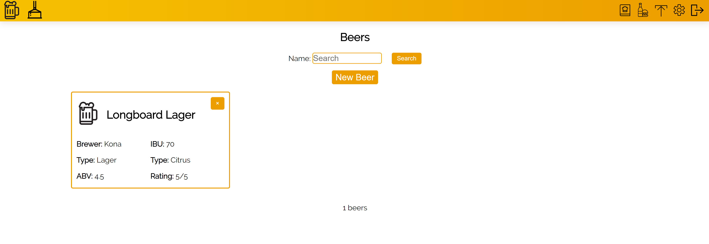

A beer-tracking web app that lets users log their favorite beers and breweries, get recipe recommendations, and discover food pairings. Users can record detailed info—brewer, style, ABV, bitterness, tasting notes—and save breweries with location, links, and notes on atmosphere.
Built the full-stack application: database schema for beers and breweries, backend API for CRUD operations, and a frontend for browsing, searching, and adding entries. Implemented pairing and recipe logic to surface relevant suggestions based on the user's logged preferences.
Full-stack (database, API, frontend—tech stack varies by version; see repo for details)

Github